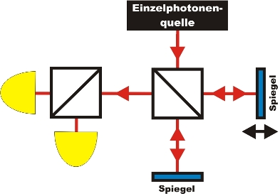

Interferenz Kapitel 3:
Interferenz und
Unteilbarkeit von einzelnen Photonen
Im letzten Kapitel wurde gezeigt, dass das einzelne Photon mit sich selbst interferiert. Das Phänomen der Interferenz kann erklärt werden, wenn sich zwei Wellen überlagern. Teilt sich das Photon am Strahlteiler jetzt plötzlich doch auf, um sich wieder mit sich selbst zu überlagern? Mit einem zweiten Strahlteiler soll gleichzeitig zur Interferenz die Unteilbarkeit überprüft werden. Hierfür wird ein zusätzlicher Strahlteiler mit zwei Einzelphotonendetektoren direkt nach dem Interferometer aufgebaut (Abb. 1).

Abb. 1: Skizze des Expeirmentes mit einem zweitem 50% Strahlteiler nach dem Interferometer
Interferenz und
Teilbarkeit des Photons?
Beim folgenden interaktiven Experiment soll die Frage der Unteilbarkeit im Zusammenhang mit der Interferenz geklärt werden. Welches Verhalten müssen die beiden Detektoren nach dem zweiten Strahlteiler zeigen, falls sich das Photon im Experiment teilt? Welches Verhalten eines einzelnen Photons erwarten und beobachten Sie?
|
|
Beobachtung und Erklärung:
Im Experiment kann am ersten Strahlteiler die Interferenz eines einzelnen Photons mit sich selbst beobachtet werden. Das gleiche Photon zeigt am zweiten Strahlteiler Unteilbarkeit und den Quantenzufall. Somit können in diesem Experiment drei Quanteneigenschaft an einem einzelnen Photon gleichzeitig beobachtet werden: Unteilbarkeit, Zufall und Interferenz.Muss das Konzept der Teilbarkeit am ersten Strahlteiler bei der Interferenz widerlegt werden? Wenn das Photon am ersten Strahlteiler eine unteilbare Portion ist, so muss es entweder den rechten oder linken Interferometerweg durchlaufen. Könnte das Photon in einem Pfad nachgewiesen werden? Mit einer unterschiedlichen "Markierung" in jedem Pfad könnte jedem einzelnen Photon eine Information über dem zurückgelegten Weg angehängt werden. Dieses Experiment wird im nächsten Kapitel durchgeführt.
Für Fortgeschrittene: Interferenz und Korrelationsfunktion zweiter Ordnung
Als quantitativer Nachweis für die Existenz des Photons als Quantenobjekt kann die Korrelationsfunktion zweiter Ordnung verwendet werden (siehe unter Existenz des Photons). Für das Licht einer Glühlampe (thermisches Licht) ist die Funktion g²(0)=2. Für das Licht eines Lasers (kohärentes Licht) ist die Funktion g²(0)=1. Dies entspricht dem Wert für eine monochromatische elektromagnetische Welle. Erst wenn die Funktion g²(0)<1 ist, kann zur Erklärung nur noch die Quantennatur des Lichts genutzt werden. In dem interaktiven Experiment wird neben der Interferenz gleichzeitig die Korrelationsfunktion zweiter Ordnung bestimmt. Zu jedem Datenpunkt wurde 10 mal je 30 Sekunden gemessen. Welchen Wert für die Korrelationsfunktion zweiter Ordnung erwarten Sie?
|
|
Beobachtung und Erklärung:
Die Korrelationsfunktion zweiter Ordnung ist immer kleiner als 1. Dies ist ein eindeutiger quantitativer Nachweis für ein unteilbares Quantenobjekt. Im Interferenzminiumum ist g²(0)=0. Dies kann auch erreicht werden, indem die Detektoren ausgeschaltet werden. Der Wert g²(0)>0 im Interferenzminiumum kann nur durch eine längere Messzeit (z. B. 180s) oder mit einer geringeren Sichtbarkeit der Interferenz (z. B. V=60%) erreicht werden.
Originaldaten aus dem
Experiment: Interferenz
und Unteilbarkeit
Zum Kapitel 4: Welchen
Weg geht das einzelne Photon im Interferometer?
Zurück zur Übersicht
Autor: P. Bronner, Dezember 2008